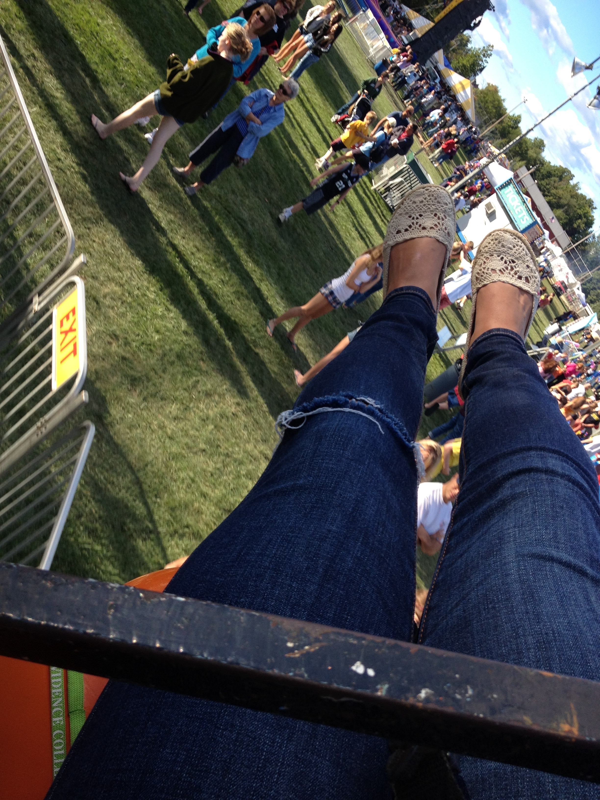
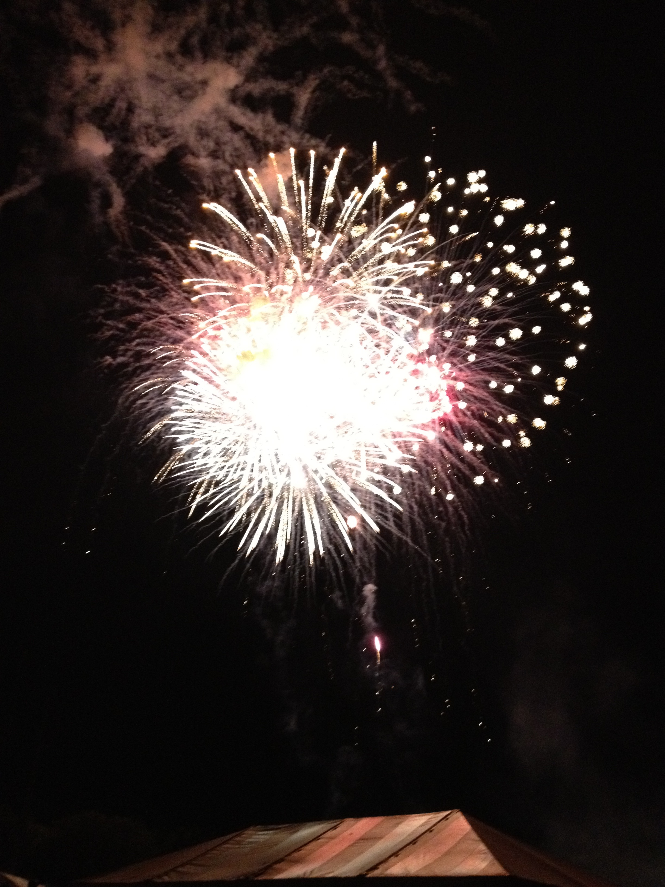
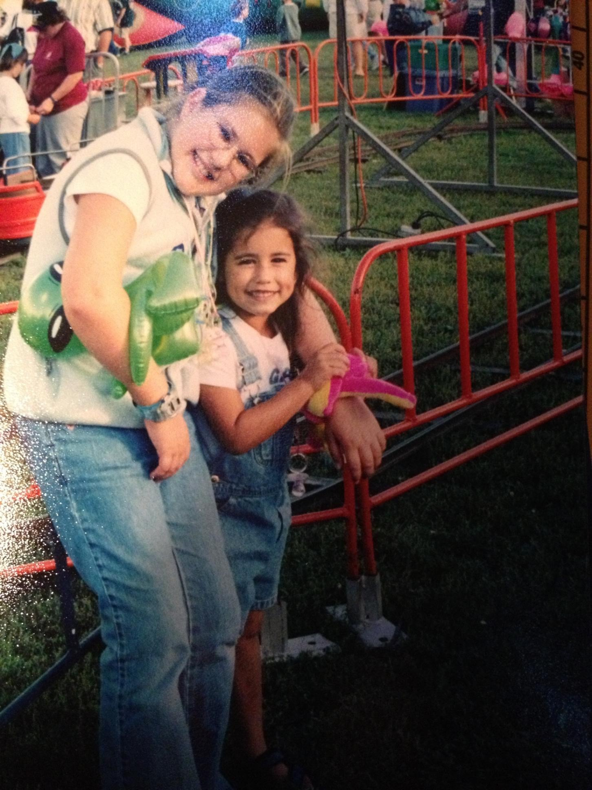

Events in Hollis
Old Home Days
This town fair is held the second weekend of September at Nichols Field in Hollis. Amusement rides, parade, barbecue, hot air balloon rides, booths for local crafters and businesses as well as food, fireworks, live music, pet parade, crafting, petting zoo, a dance, and more!
  Hollis Strawberry Festival
This festival is held every June with live music and locally grown strawberry treats. The strawberry shortcake is a must!
Hollis Apple Festival
This festival is held every October with live music, locally grown apple products, and a half marathon ran through the town.